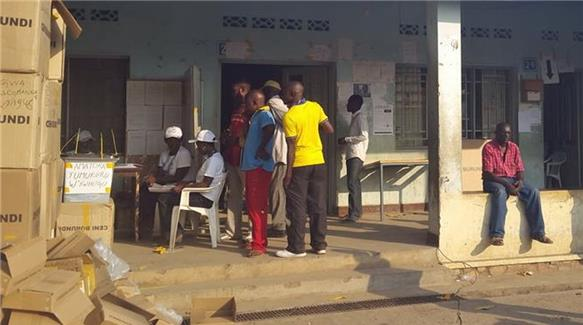
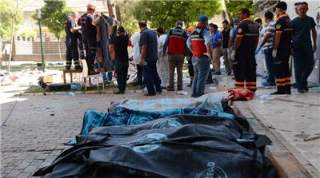
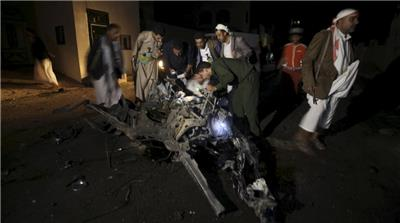
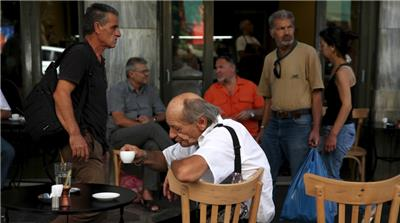
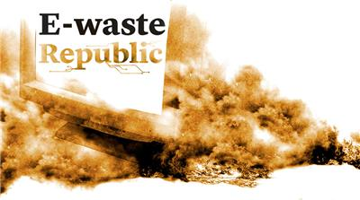
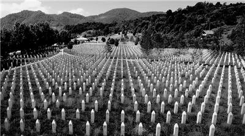
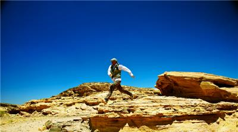

Burundi presidential polls open amid blasts and gunfire Opposition and civil society groups boycott vote, saying it is unconstitutional, as Pierre Nkurunziza seeks third term. 21 Jul 2015 07:19 GMT | Politics, Africa, Burundi, Elections
 Turkey to boost border security after 'ISIL' attack Move comes as protesters say government has not done enough to stop ISIL, suspected over bombing in Kurdish border town. 21 Jul 2015 03:25 GMT | War & Conflict, Middle East, Turkey-Syria border, Turkey
Prankster showers FIFA's Blatter in fake money Prank overshadows FIFA president's controversial announcement that he will remain in role for another seven months. 21 Jul 2015 00:05 GMT | Sport, FIFA, Football, Sepp Blatter
 ISIL Yemen branch claim responsibility for mosque blast Group says it was targeting a "Houthi den" in car explosion outside Shia mosque in Sanaa that left several people dead. 21 Jul 2015 07:28 GMT | War & Conflict, Middle East, ISIL, Yemen, Houthis
FARC rebels begin unilateral ceasefire in Colombia Ceasefire marks latest attempt to bring peace to the country after a half-century of hostilities. 21 Jul 2015 06:42 GMT | Latin America, Colombia, FARC
North Korea 'not interested' in Iran-like talks with US Pyongyang says it will not give up its nuclear capabilities, adding programme is an "essential deterrence" against US. 21 Jul 2015 06:11 GMT | Asia, North Korea, United States
US and Cuba restore formal diplomatic relations Cuban flag raised in Washington DC as US and Cuba reopen their embassies for the first time in more than 50 years. 20 Jul 2015 22:16 GMT | Politics, US & Canada, Latin America, Cuba, United States
 Greece no longer in default as it repays creditors Country pays billions of euros to the IMF and the European Central Bank as it raises taxes. 21 Jul 2015 03:06 GMT | Europe, Greece, Business & Economy
Iran deal: From talk of a bomb to economic boom? International investors eye deals worth billions of dollars as Tehran strikes a deal over its nuclear programme. 21 Jul 2015 00:17 GMT | Iran, Middle East, US
E-waste RepublicScience & Technology The greatest producers of e-waste per person are the United States and the European Union. Find out how Ghana manages this problem. Ghana children work in toxic haze of e-waste
Changing face of Cuba For over 50 years Cubans have endured enmity and a trade embargo, and now are set for closer US ties. 20 Jul 2015 23:58 GMT | Arts & Culture, Latin America, Cuba by Saif Khalid
A challenging harvest for Syrian refugees in Jordan Many Syrian Bedouins who fled violence in their home country are working for under-the-table wages on Jordanian farms. 20 Jul 2015 06:29 GMT | Human Rights, Refugees, Syrian crisis, Syria, Jordan by Alisa Reznick
Pamplona's Running of the Bulls As San Fermin festival comes to an end in the Spanish city of Pamplona, the annual tradition faces an uncertain future. 20 Jul 2015 06:28 GMT | Arts & Culture, Europe, Spain by George Henton
 E-waste Republic The greatest producers of e-waste per person are the United States and the European Union. Find out how Ghana manages this problem. 15 Jul 2015 12:43 GMT | Science & Technology, Environment
 Marking 20 years since Srebrenica genocide A 360-degree virtual tour of the final resting place of 8,372 Muslims massacred during the Bosnian war. 10 Jul 2015 20:00 GMT | Srebrenica, Human Rights, War & Conflict, Europe, Bosnia
Counting the CostGreek crisis: What next? New bailout package means further austerity measures, despite recent negotiations in which Greeks pleaded for leniency. Business & Economy, Europe, Greece
In the FieldDoes the diplomatic thaw mean the end of old Havana?Cuban urban architect Miguel Coyula discusses the potential cultural impact of likely foreign investment in the capital.Politics, Cuba, US
WitnessTresor and the camp musiciansA Congolese hip-hop artist exiled in a Malawian refugee camp is determined to fight xenophobia with his music.Arts & Culture, Congo, Democratic Republic of Congo
Al Jazeera WorldSon of the DesertItalian marathon runner Max Calderan goes on a spectacular Ramadan journey across the desert of the Sinai Peninsula.Health, Middle East, Egypt